1多选难度 ⭐⭐约 7 分钟
质量 $m=1\ \text{kg}$ 物体从高 $h=0.2\ \text{m}$ 光滑轨道 $P$ 静止下滑到水平传送带 $A$，带 $\mu=0.2$、$AB$ 距 $L=5\ \text{m}$、带速 $v=4\ \text{m/s}$，$g=10$。则（ ）
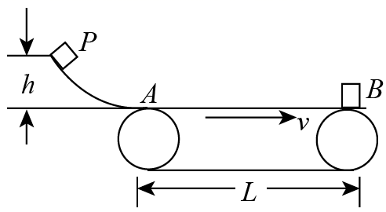
A. $A\to B$ 时间 $1.5\ \text{s}$B. 摩擦做功 $2\ \text{J}$
C. 产生热量 $2\ \text{J}$D. 电动机多做功 $10\ \text{J}$
💡 显示答案与解析
【答案】AC 【难度】0.65
$v_0=\sqrt{2gh}=2\ \text{m/s}<4$；$a=\mu g=2\ \text{m/s}^2$；$t_1=\dfrac{v-v_0}{a}=1\ \text{s}$，$s_1=\dfrac{v_0+v}{2}t_1=3\ \text{m}<L$；$t_2=\dfrac{L-s_1}{v}=0.5\ \text{s}$；$t=1.5\ \text{s}$，A 对。
到 $B$ 动能定理 $W=\dfrac12mv^2-\dfrac12mv_0^2=6\ \text{J}$，B 错；皮带位移 $S_{皮}=vt_1=4\ \text{m}$，$Q=\mu mg(S_{皮}-s_1)=2\ \text{J}$，C 对；电动机多做功 $=(\dfrac12mv^2-\dfrac12mv_0^2)+Q=8\ \text{J}$，D 错。故选 AC。
2单选难度 ⭐⭐约 6 分钟
长 $12\ \text{m}$、倾角 $30^\circ$ 的传送带送工件到卡车，每件 $25\ \text{kg}$，每分钟送 $16$ 件，不计加速，$g=10$。正确的是（ ）
A. 每分钟对工件总功 $2.4\times10^4\ \text{J}$B. 摩擦每分钟总功 $1.2\times10^4\ \text{J}$
C. 传送功率 $100\ \text{W}$D. 传送功率 $200\ \text{W}$
💡 显示答案与解析
【答案】A 【难度】0.68
工件匀速，动能变为 0，静摩擦做功全转势能。单件升高 $h=L\sin30^\circ=6\ \text{m}$，$\Delta E_P=mgh=1500\ \text{J}$。
每分钟 16 件总功 $W_{总}=16\times1500=2.4\times10^4\ \text{J}$，A 对；静摩擦总功=势能增量，B 错；功率 $P=\dfrac{W_{总}}{60}=400\ \text{W}$，C、D 错。故选 A。
3单选难度 ⭐⭐⭐约 8 分钟
倾斜传送带送 $m=1\ \text{kg}$ 货物，$1.2\ \text{s}$ 到 $B$ 端，$v-t$ 图如乙（$g=10$）。由图可知（ ）
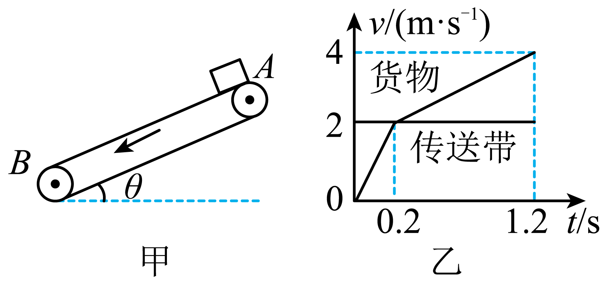
A. $AB$ 距 $2.4\ \text{m}$B. $\mu=0.5$
C. 带对货做功 $12.8\ \text{J}$D. 摩擦生热 $11.2\ \text{J}$
💡 显示答案与解析
【答案】B 【难度】0.4
A：$L=$ 面积 $=\dfrac12\times2\times0.2+\dfrac12(2+4)\times1=3.2\ \text{m}$，错。
B：$g\sin\theta+\mu g\cos\theta=10$，$g\sin\theta-\mu g\cos\theta=2$，解得 $\theta=37^\circ,\ \mu=0.5$，对。
C：带对货功 $W=\dfrac12mv^2-mgL\sin\theta=-11.2\ \text{J}$，错；D：热量 $Q=\mu mg\cos\theta\cdot x_{相对}=4.8\ \text{J}$，错。故选 B。
4多选难度 ⭐⭐⭐约 9 分钟
水平向右匀速传送带左端 $A$，每隔 $T$ 轻放一同质量 $m$、摩擦因数 $\mu$ 工件，已共速工件间距为 $x$。判断正确的有（ ）
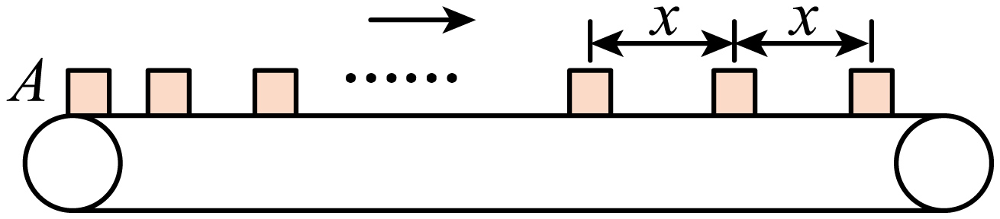
A. 带速 $\dfrac{x}{T}$B. 带速 $2\sqrt{2\mu gx}$
C. 每工件生热 $\dfrac12\mu mgx$D. 较长时间内多耗能 $\dfrac{mtx^2}{T^3}$
💡 显示答案与解析
【答案】AD 【难度】0.4
A：规律相同，$x=vT\Rightarrow v=\dfrac{x}{T}$，对。
B：匀加速位移与 $x$ 无已知关系，不能得 $v=2\sqrt{2\mu gx}$，错。
C：相对路程 $\Delta x=v\cdot\dfrac{v}{\mu g}-\dfrac{v^2}{2\mu g}=\dfrac{x^2}{2\mu gT^2}$，$Q=\mu mg\Delta x=\dfrac{mx^2}{2T^2}$，错。
D：单件多耗能 $E=\dfrac12mv^2+\mu mg\Delta x=\dfrac{mx^2}{T^2}$；时间 $t$ 内件数 $n=\dfrac{t}{T}$，总多耗能 $E'=\dfrac{mtx^2}{T^3}$，对。故选 AD。
5解答难度 ⭐⭐⭐约 11 分钟
传送带Ⅰ倾角 $30^\circ$、Ⅱ倾角 $37^\circ$，经光滑水平面 $BC$ 连接，均顺时针。装货箱子（质量 $M=1\ \text{kg}$）轻放Ⅰ的 $A$，货物 $m=3\ \text{kg}$。Ⅰ：$v_1=8\ \text{m/s}$，$L_1=15\ \text{m}$，$\mu_1=\dfrac{\sqrt3}{2}$；Ⅱ：$v_2=4\ \text{m/s}$，$L_2=8\ \text{m}$，$BC$ 洒水使 $\mu_2=0.5$，$g=10$，$\sin37^\circ=0.6,\cos37^\circ=0.8$。(1) 箱子在Ⅰ上时间；(2) 能否运到高台？求Ⅱ上向上运动产生内能。

💡 显示答案与解析
【答案】(1) $3.475\ \text{s}$ (2) 不能，$19.2\ \text{J}$ 【难度】0.4
(1) Ⅰ：$f-(m+M)g\sin30^\circ=(m+M)a_1$，$F_N=(m+M)g\cos30^\circ$，$f=\mu_1F_N\Rightarrow a_1=2.5\ \text{m/s}^2$；共速位移 $x=\dfrac{v_1^2}{2a_1}=12.8\ \text{m}<15$；$v_1=a_1t_1$，$L_1-x=v_1t_2\Rightarrow t=t_1+t_2=3.475\ \text{s}$。
(2) Ⅱ：先向上匀减速 $Mg\sin37^\circ+\mu_2Mg\cos37^\circ=Ma_2\Rightarrow a_2=10$；$v_2^2-v_1^2=-2a_2x_1\Rightarrow x_1=2.4\ \text{m}$；因 $Mg\sin37^\circ>\mu_2Mg\cos37^\circ$，继续减速 $Mg\sin37^\circ-\mu_2Mg\cos37^\circ=Ma_3\Rightarrow a_3=2$；$0-v_2^2=-2a_3x_2\Rightarrow x_2=4\ \text{m}$；$x_1+x_2=6.4\ \text{m}<8$，不能。
第一段 $v_2=v_1-a_2t_3$，$x_{传1}=v_2t_3$，$\Delta x_1=x_1-x_{传1}$，$Q_1=\mu_2Mg\cos37^\circ\cdot\Delta x_1$；第二段 $0=v_2-a_3t_4$，$x_{传2}=v_2t_4$，$\Delta x_2=x_{传2}-x_2$，$Q_2=\mu_2Mg\cos37^\circ\cdot\Delta x_2$；$Q=Q_1+Q_2=19.2\ \text{J}$。
6解答难度 ⭐⭐⭐约 12 分钟
水平传送带 $6\ \text{m/s}$ 顺时针，右端接光滑水平面 $BC$，紧挨 $BC$ 的地面放 $M=1\ \text{kg}$ 木板。质量 $m=1\ \text{kg}$ 滑块轻放左端 $A$，到 $B$ 时恰与带同速，再滑上木板。$\mu_1=0.45$（滑块—带），$\mu_2=0.2$（滑块—板），$\mu_3=0.05$（板—地），$g=10$。求：(1) 滑块 $A\to B$ 相对带滑动路程；(2) 带多耗电能；(3) 木板至少多长使滑块不掉落。
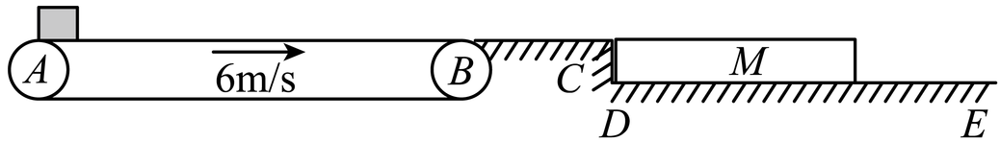
💡 显示答案与解析
【答案】(1) $4\ \text{m}$ (2) $36\ \text{J}$ (3) $L=6\ \text{m}$ 【难度】0.4
(1) $a=\mu_1g=4.5\ \text{m/s}^2$，$t=\dfrac{v}{a}=\dfrac43\ \text{s}$，带位移 $x_2=vt=8\ \text{m}$，物位移 $x_1=\dfrac12at^2=1.6\ \text{m}$，$\Delta x=x_2-x_1=4\ \text{m}$。
(2) 多耗电能 $Q=\mu_1mg\Delta x+\dfrac12mv^2=36\ \text{J}$。
(3) 板上 $a_{滑}=g\mu_2=2$，板 $Ma_{木}=mg\mu_2-(M+m)g\mu_3\Rightarrow a_{木}=1$；共速 $v_{共}=v-a_{滑}t=a_{木}t$，位移差 $L=x_{滑}-x_{木}=6\ \text{m}$。
7解答难度 ⭐⭐约 11 分钟
质量 $M=2\ \text{kg}$ 小物块随足够长水平传送带运动，被向左飞来子弹击穿（图甲），地面观察者记其速度—时间如图乙（向右为正），$g=10$。(1) 指出带速度方向大小并说明理由；(2) 物块与带间 $\mu$；(3) 物块对带共做多少功？系统多少能量转内能？
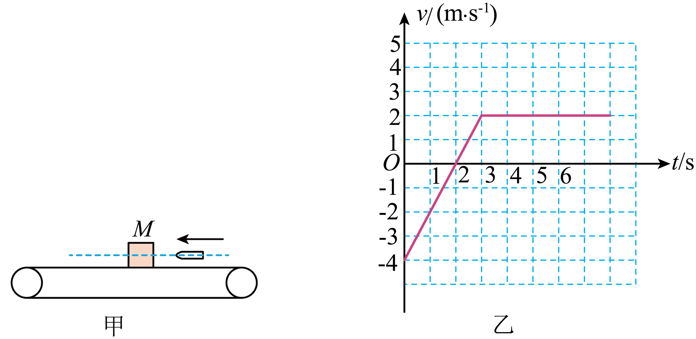
💡 显示答案与解析
【答案】(1) 向右 $2.0\ \text{m/s}$ (2) $0.2$ (3) $-24\ \text{J}$；$36\ \text{J}$ 【难度】0.61
(1) 物块先向左减速到 0 再向右加速到 $2.0\ \text{m/s}$ 后匀速，故带向右、速度 $v=2.0\ \text{m/s}$。
(2) $a=\dfrac{2-(-4)}{3}=2\ \text{m/s}^2$，$f=\mu Mg\Rightarrow \mu=\dfrac{a}{g}=0.2$。
(3) $0\sim3\ \text{s}$ 带向右位移 $x_1=vt=6\ \text{m}$，物块对带功 $W=-\mu Mgx_1=-24\ \text{J}$；相对位移 $\Delta x=(x_2+x_3)+(x_5-x_4)=9\ \text{m}$（$x_2=4,x_3=4,x_4=1,x_5=2$），$Q=f\Delta x=36\ \text{J}$。
8解答难度 ⭐⭐⭐约 12 分钟
足够长传送带 $AB$ 接光滑水平面 $BC$，光滑半圆轨道（$R=0.5\ \text{m}$）切于 $C$。带以 $v$ 顺时针，$m=0.5\ \text{kg}$ 物体以 $v_1=6\ \text{m/s}$ 向左滑上带，经 $2\ \text{s}$ 减为零，返回水平面后沿半圆轨道恰到 $D$，$g=10$。求：(1) $\mu$；(2) $v$；(3) 滑动过程系统生热。
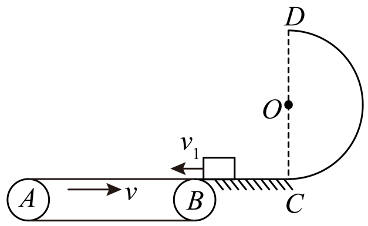
💡 显示答案与解析
【答案】(1) $0.3$ (2) $5\ \text{m/s}$ (3) $30.25\ \text{J}$ 【难度】0.4
(1) $\mu mg=ma$，$0-v_1=-at\Rightarrow \mu=0.3$。
(2) 滑回水平面速度仍 $v_2=v_1=6\ \text{m/s}$；$D$ 点 $mg=m\dfrac{v_D^2}{R}$，$C\to D$ 动能定理 $-mg\cdot2R=\dfrac12mv_D^2-\dfrac12mv_C^2\Rightarrow v_C=5\ \text{m/s}$；因 $v_C<v_2$，返回时先加速到与带同速再匀速，故 $v=v_C=5\ \text{m/s}$。
(3) 左滑相对位移 $\Delta x_1=\dfrac{v_1}{2}t+vt$；右滑 $\Delta x_2=v\cdot\dfrac{v}{\mu g}-\dfrac{v^2}{2\mu g}$；$Q=\mu mg(\Delta x_1+\Delta x_2)=30.25\ \text{J}$。
9解答难度 ⭐⭐⭐约 11 分钟
$x$ 轴与水平传送带重合，原点 $O$ 在左端，带长 $L=8\ \text{m}$，匀速 $v_0=5\ \text{m/s}$。质量 $1\ \text{kg}$ 物块轻放 $x_P=2\ \text{m}$ 处，到 $Q$ 后冲上光滑斜面恰到 $N$。$\mu=0.5$，$g=10$。(1) $N$ 点纵坐标；(2) 带上运动生热；(3) 若轻放某些位置最终均能越 $y_M=0.5\ \text{m}$ 的 $M$ 点，求这些位置横坐标范围。
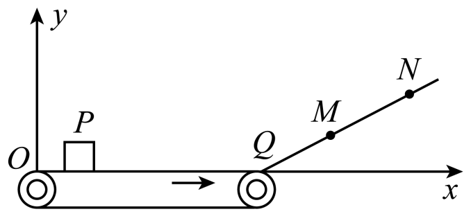
💡 显示答案与解析
【答案】(1) $1.25\ \text{m}$ (2) $12.5\ \text{J}$ (3) $0\le x<7\ \text{m}$ 【难度】0.4
(1) 带上匀加速 $a=\mu g=5$，$t=\dfrac{v_0}{a}=1\ \text{s}$，位移 $x_0=\dfrac12at^2=2.5\ \text{m}<L-x_P$；共速后匀速到 $Q$。机械能守恒 $\dfrac12mv_0^2=mgy_N\Rightarrow y_N=1.25\ \text{m}$。
(2) 相对滑动位移 $x_{相对}=v_0t-x_0=2.5\ \text{m}$，$Q=\mu mgx_{相对}=12.5\ \text{J}$。
(3) 设放 $x_1$ 处恰到 $M$：$\mu mg(l-x_1)=mgy_M\Rightarrow x_1=7\ \text{m}$，故范围 $0\le x<7\ \text{m}$。
10解答难度 ⭐⭐约 10 分钟
飞机场行李装置为水平环形传送带，总质量 $M$。带达稳定速度 $v$ 后，将 $n$ 件质量均为 $m$ 行李依次轻放（转弯处无相对滑动，忽略轮与电机损耗）。求从开启到运完行李消耗电能。
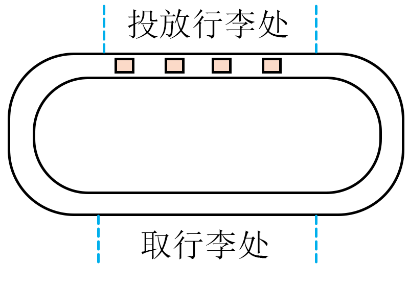
💡 显示答案与解析
【答案】$\dfrac12Mv^2+nmv^2$ 【难度】0.65
单件：摩擦生热 $Q=n?\ $ 这里单件热量 $Q_1=\dfrac12mv^2$（相对路程 $\Delta x=\dfrac12vt$，$v=\mu gt$）；总热量 $Q_{总}=\dfrac12nmv^2$。
能量守恒：消耗电能 $=Q_{总}+\dfrac12Mv^2$（带动能）$+n\cdot\dfrac12mv^2$（行李动能）$=\dfrac12Mv^2+nmv^2$。
11解答难度 ⭐⭐⭐约 13 分钟
两相互垂直等高水平传送带甲、乙，甲速 $v_0$。工件离甲前与甲同速，平稳传到乙，工件与乙 $\mu$，乙宽足够。求：(1) 乙速为 $v_0$ 时，工件在乙上侧向滑过距离 $s$；(2) 乙速 $2v_0$ 时，刚停侧向滑动速度 $v$；(3) 乙速 $2v_0$ 不变，刚停滑动时下一工件恰好传到，重复。每件质量 $m$，求驱动乙的电机平均输出功率。
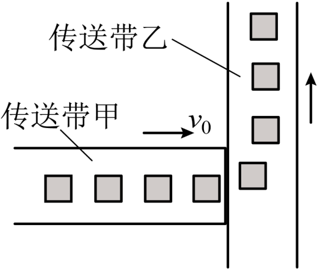
💡 显示答案与解析
【答案】(1) $s=\dfrac{\sqrt2v_0^2}{2\mu g}$ (2) $v=2v_0$ (3) $\overline P=\dfrac{4\sqrt5}{5}\mu mgv_0$ 【难度】0.4
(1) 刚上传有相对带侧向 $v_0$ 与反向 $v_0$，合速与带成 $45^\circ$。$a_x=-\dfrac{\sqrt2}{2}\mu g$，$a_y=\dfrac{\sqrt2}{2}\mu g$；侧向减为零时位移 $s=\dfrac{\sqrt2v_0^2}{2\mu g}$。
(2) 同理，刚停侧向滑动时相对带静止，故 $v=2v_0$。
(3) 单件相对滑行 $\Delta s=\dfrac{5v_0^2}{2\mu g}$，时间 $t=\dfrac{\sqrt5v_0}{\mu g}$；电机功 $W=\dfrac12m(2v_0)^2-\dfrac12mv_0^2+\mu mg\Delta s$；$\overline P=\dfrac{W}{t}=\dfrac{4\sqrt5}{5}\mu mgv_0$。
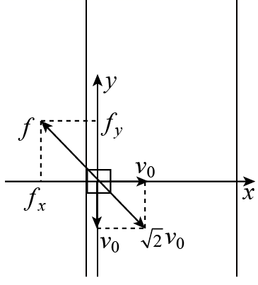
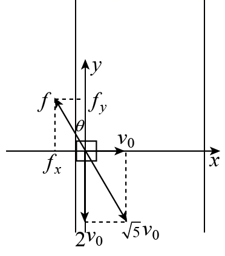
12解答难度 ⭐⭐⭐约 13 分钟
光滑水平面上 $m=4\ \text{kg}$ 物块左侧压 $k=32\ \text{N/m}$ 轻弹簧（未拴接），与左墙细线拴接静止 $O$。水平面 $A$ 点与顺时针倾角 $37^\circ$ 传送带平滑连接，$x_{OA}=0.25\ \text{m}$，$L_{AB}=2\ \text{m}$，$\mu=0.5$。剪断细线同时加变力 $F$ 使 $O\to B$ 匀加速。到 $A$ 弹簧恰原长，到 $B$ 撤 $F$，沿平行 $AB$ 抛出，$C$ 为最高点，$g=10$。(1) $B\to C$ 竖直位移/水平位移；(2) 带速 $5\ \text{m/s}$ 时摩擦生热；(3) 带速 $v\in(2,3)\ \text{m/s}$ 时，$O\to B$ 过程 $F$ 做功与 $v$ 关系。
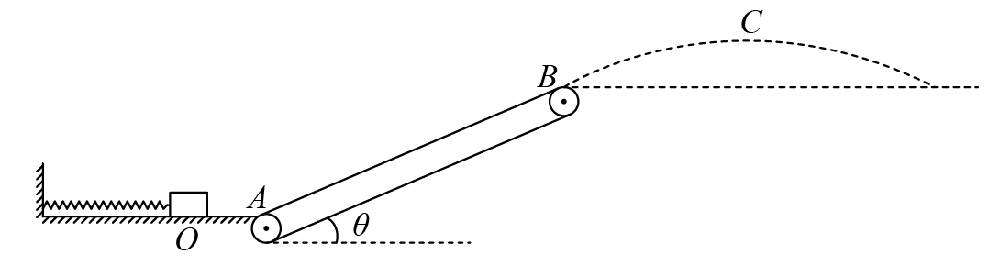
💡 显示答案与解析
【答案】(1) $\dfrac38$ (2) $Q=48\ \text{J}$ (3) $W=105-8v^2$ 【难度】0.4
(1) $h=\dfrac{v_0\sin\theta}{2}t$，$x=v_0t\cos\theta$，$\theta=37^\circ\Rightarrow \dfrac{h}{x}=\dfrac38$。
(2) $kx_{OA}=ma\Rightarrow a=2$，$v_A^2=2ax_{OA}\Rightarrow v_A=1$，$v_B^2=2a(x_{OA}+L)\Rightarrow v_B=3$；$t=\dfrac{v_B-v_A}{a}=1\ \text{s}$；$Q=\mu mg\cos\theta(vt-L)=48\ \text{J}$。
(3) 水平段 $W_1=\overline Fx_{OA}=1\ \text{J}$；$2<v<3$ 时摩擦先向上后向下：$F_1+\mu mg\cos\theta-mg\sin\theta=ma\Rightarrow F_1=16$；$F_2-\mu mg\cos\theta-mg\sin\theta=ma\Rightarrow F_2=48$；$v^2-v_A^2=2ax'$，$W_2=F_1x'+F_2(L-x')=104-8v^2$；$W=W_1+W_2=105-8v^2$。
13解答难度 ⭐⭐⭐约 13 分钟
足够长传送带在竖直平面内，半径 $R=0.5\ \text{m}$、圆心角 $53^\circ$ 圆弧轨道与平台平滑连接，平台与顺时针水平传送带平滑连接。工件 $A$（$m_A=4\ \text{kg}$）从圆弧顶点无初速下滑，在平台与 $B$（$m_B=1\ \text{kg}$）碰成整体后滑上传送带。带上摩擦生热 $Q=2.5\ \text{J}$，忽略轨道平台摩擦，$g=10$。(1) $A$ 到圆弧最低点受支持力；(2) $A$、$B$ 碰撞损机械能；(3) 传送带速度大小。
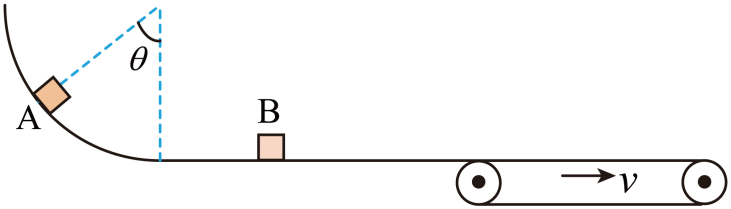
💡 显示答案与解析
【答案】(1) $72\ \text{N}$ 竖直向上 (2) $1.6\ \text{J}$ (3) $0.6\ \text{m/s}$ 或 $2.6\ \text{m/s}$ 【难度】0.4
(1) $m_Ag(R-R\cos53^\circ)=\dfrac12m_Av_0^2\Rightarrow v_0=2$；$F_N-m_Ag=m_A\dfrac{v_0^2}{R}\Rightarrow F_N=72\ \text{N}$ 竖直向上。
(2) 动量守恒 $m_Av_0=(m_A+m_B)v_{共}\Rightarrow v_{共}=1.6\ \text{m/s}$；损机械能 $\Delta E=\dfrac12m_Av_0^2-\dfrac12(m_A+m_B)v_{共}^2=1.6\ \text{J}$。
(3) 若 $v<v_{共}$：减速后匀速，$\mu(m_A+m_B)g=(m_A+m_B)a$，$v=v_{共}-at_1$，$x_1=\dfrac{v+v_{共}}{2}t_1$，$x_2=vt_1$，$Q=\mu(m_A+m_B)g(x_1-x_2)\Rightarrow v=0.6\ \text{m/s}$（另一解舍去）。
若 $v>v_{共}$：加速后匀速，同理 $x_1'=\dfrac{v+v_{共}}{2}t_2$，$x_2'=vt_2$，$Q=\mu(m_A+m_B)g(x_2'-x_1')\Rightarrow v=2.6\ \text{m/s}$（另一解舍去）。